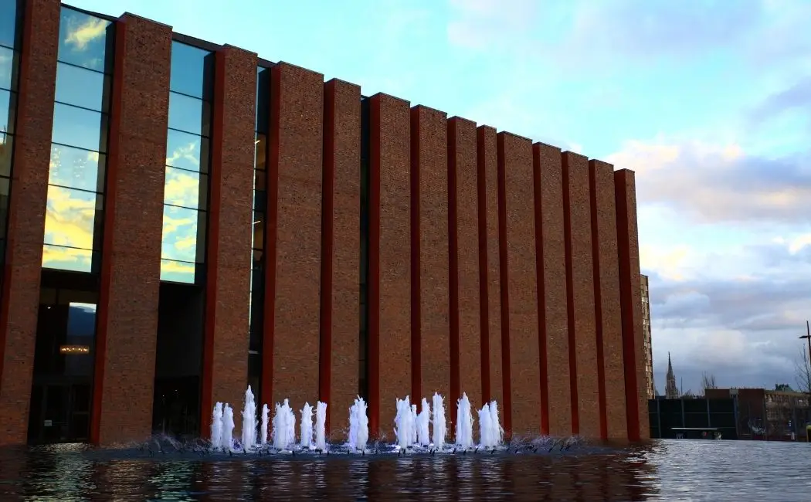

W Katowicach rusza kolejna edycja Letniego Festiwalu Filmowego, który już od końca czerwca do końca sierpnia zaprasza na wyjątkowe projekcje pod gołym niebem. Mieszkańcy miasta mieli realny wpływ na wybór miejsc pokazów – w specjalnej ankiecie oddano aż 2826 głosów, co świadczy o ogromnym zainteresowaniu wydarzeniem.
Seanse odbywają się w dziesięciu różnych lokalizacjach, rozsianych po całym mieście. W każdej z nich organizowane są dwa pokazy – sobotni dla dorosłych oraz niedzielny dedykowany najmłodszym widzom. Wśród miejsc znalazły się między innymi nowy amfiteatr w parku Boguckim, skwer Zillmannów na Nikiszowcu czy amfiteatr przy stawie kajakowym na osiedlu Paderewskiego-Muchowca.
Harmonogram rozpoczął się już 28 czerwca i potrwa do 31 sierpnia. Szczegółowe daty i miejsca prezentujemy poniżej: